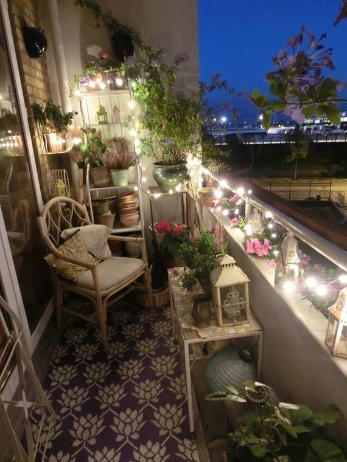

远古和平的色彩，是一抹温馨的新绿，是橄榄枝的颜色，象征着朝气与蓬勃，象征着生命与活力，看了它人们会变得团结，变得友善，让人互尊互爱；远古和平的色彩，是一片温暖的芳红，是夕阳的颜色，象征着理解与宽容，象征着幸福与美好，看了它人们会变得快乐，变得富有爱心。当山洪来临，人们齐心协力，共同面对突如其来的灾难，化险为夷，然后再庆祝一番；当干旱来临，人们互相帮助，救济缺水的朋友.
历史典故
五帝中的舜
孔融让梨
